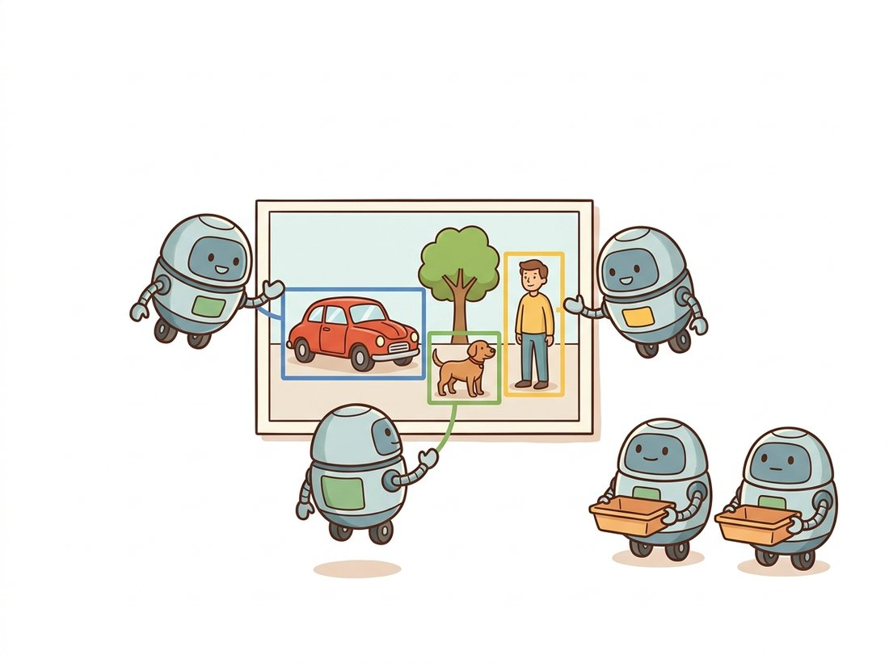

"They gave me a hundred little assistants and told each one: go find me an object, any object, but no two of you may return the same one. At first we argued constantly about who saw what. Eventually we worked out a polite division of labor, and now I never need anyone to clean up after me. No suppression. No duplicates. Just a tidy list."
A Transformer Decoder With a Hundred Object Queries
DETR reframes detection as direct set prediction: a transformer decoder turns a fixed set of learned object queries into a fixed-size list of (box, class) predictions, and a bipartite matching loss forces exactly one query to claim each object, so the model produces a clean set with no anchors and no non-maximum suppression. Every detector before it emitted a redundant pile of overlapping boxes and leaned on hand-designed post-processing (anchors, NMS) to recover a clean answer. DETR makes the clean answer the training objective itself. The price was slow convergence in the original, which Deformable DETR and the DINO family fixed, producing the first transformer detectors to beat the best convolutional models on COCO. This section builds the object-query idea, the Hungarian matching loss, and the line of fixes that made the design practical, and it connects directly back to the attention you built in Chapter 22.
Every detector from Section 23.2 through Section 23.4 shares an awkward two-step character: the network emits many overlapping candidate boxes, and a separate, non-learned procedure (NMS, sometimes preceded by anchor matching) prunes them into a final set. That post-processing is hand-tuned, non-differentiable, and a frequent failure point in crowded scenes. DETR (Detection Transformer, Carion et al., 2020) asked a more ambitious question: can the network simply output the final set directly, with duplicate-suppression folded into the loss rather than bolted on afterward? Doing so requires the attention mechanism of Chapter 22 and a loss that compares two sets, and it changed how the field thinks about the detection output. The illustration below pictures the object queries dividing the work, one each, with no duplicate-sweeping cleanup.

1. Object Queries and the Decoder Intermediate
DETR's architecture is a CNN or transformer backbone, a transformer encoder that processes the backbone's flattened feature map, and a transformer decoder that is the new idea. The decoder takes a small, fixed number of learned input vectors called object queries (the original uses $N = 100$), and through cross-attention to the encoded image features, transforms each query into a prediction: a class (including a "no object" class, written $\varnothing$) and a box. Because there are always exactly $N$ queries, the output is always exactly $N$ predictions; most of them on any given image will be $\varnothing$, and the rest are the detected objects. The queries are learned, not hand-placed like anchors; over training each query specializes, with some learning to attend to the left of the image, some to large central objects, and so on, a soft, learned version of the spatial priors anchors hard-coded.
The decoder is exactly the transformer decoder block from Chapter 22: each query attends to the other queries (self-attention, which is how queries coordinate to avoid claiming the same object) and to the image features (cross-attention, which is how a query gathers the evidence for its object). Figure 23.5.1 shows the full pipeline and the crucial bipartite match that defines the loss.
Because queries softly specialize to regions over training, students often picture query 7 as "the box at grid position (3, 4)", a renamed anchor. It is not. A query is a learned embedding fed at the decoder input; it is the same vector for every image and carries no spatial coordinate. What it predicts on a given image emerges entirely from cross-attention to that image's features, so the same query can fire on a top-left object in one photo and a central one in another. The statistical tendencies you can scatter-plot (Exercise 23.5.2) are soft priors the model discovered, not a hard-coded tiling like the $H \times W \times k$ anchor grid of Section 23.2. Treating queries as fixed anchors leads to the wrong conclusion that adding queries adds spatial resolution; in fact $N$ caps the number of objects the model can report, regardless of where they sit.
2. The Set-Prediction Loss and Hungarian Matching Advanced
The decoder emits $N$ predictions but the image has some smaller number of ground-truth objects, and crucially the predictions come in no particular order. To compute a loss we must first decide which prediction is responsible for which ground-truth object. DETR pads the ground-truth set to size $N$ with $\varnothing$ entries and finds the one-to-one assignment between the $N$ predictions and the $N$ (padded) ground truths that minimizes a total matching cost. This optimal one-to-one assignment is the classical assignment problem, solved exactly in polynomial time by the Hungarian algorithm.
A taxi analogy makes the assignment concrete. Picture a small table of $N$ taxi drivers and $N$ waiting passengers, with each cell holding the fare it would cost to send that driver to that passenger; the Hungarian algorithm picks exactly one cell per row and per column so the total fare is smallest. Here each prediction (driver) is paired with the one ground-truth object (passenger) it can claim most cheaply, the predicted padding rows soaking up the leftover passengers as "no object". The mapping is exact: drivers map to the $N$ predictions, passengers to the $N$ padded ground truths, and the per-cell fare to the class-plus-box matching cost below. There is one place the picture breaks down: real taxi dispatch can leave a driver idle, but DETR forces a strict pairing where every prediction is assigned to exactly one (possibly $\varnothing$) target, which is precisely the constraint that bans two predictions from claiming the same object.
You call SciPy's linear_sum_assignment and treat it as a black box, but the mechanics are worth one paragraph. The Hungarian algorithm maintains a dual variable (a potential) for every row and column and a partial matching. At each step it builds the equality subgraph (cells whose cost equals the sum of their row and column potentials) and searches it for an augmenting path, an alternating chain of unmatched and matched edges that lets it grow the matching by one pair. When no augmenting path exists in the current equality subgraph, it updates the dual potentials by the smallest slack to admit a new equality edge, and repeats. Because each of the $N$ augmentations costs $O(N^2)$, the total is $O(N^3)$, polynomial and exact, which is why DETR can afford to re-solve the assignment from scratch on every training image. This is the same primal-dual idea behind min-cost-flow.
With the assignment understood, we can write down the cost it minimizes. The matching cost for pairing prediction $i$ with ground truth $\sigma(i)$ combines a class term and a box term:
where $c_i$ and $b_i$ are the ground-truth class and box, $\hat{p}$ and $\hat{b}$ are the predicted class probability and box, and $L_{\text{box}}$ is a weighted sum of an L1 distance and a GIoU loss (one of the IoU-based losses flagged back in Section 23.1). Generalized IoU (GIoU) is plain IoU minus the fraction of the smallest enclosing box not covered by the union, which, unlike raw IoU, still gives a useful gradient when two boxes do not yet overlap. Once the optimal matching $\hat{\sigma}$ is fixed, the actual training loss is computed against it: a cross-entropy classification loss on every prediction (matched ones toward their object's class, unmatched ones toward $\varnothing$) plus the box loss on the matched pairs only.
This one-to-one matching is the entire trick that removes NMS. Because exactly one prediction is rewarded for each object and all others are pushed toward $\varnothing$, the network is directly penalized for emitting two boxes on one object; duplicate suppression is in the loss, not in a post-process. The snippet below shows the matching step using SciPy's exact solver, which is precisely what the reference implementation calls. The small worked case at the end runs it on three predictions and two ground-truth objects so you can watch the assignment fall out: two queries get matched and the third is left for the "no object" class.
# DETR's bipartite matching: build a cost matrix between every prediction and
# every ground-truth object (class + L1 + GIoU terms), then solve for the
# one-to-one assignment of minimum total cost. This is what replaces NMS.
import torch
from scipy.optimize import linear_sum_assignment
def hungarian_match(pred_logits, pred_boxes, gt_labels, gt_boxes, cost_giou_fn):
"""pred_logits: (N, num_classes+1). pred_boxes: (N, 4).
gt_labels: (M,). gt_boxes: (M, 4). Returns matched (pred_idx, gt_idx)."""
probs = pred_logits.softmax(-1) # (N, C+1)
cost_class = -probs[:, gt_labels] # (N, M): want high prob -> low cost
cost_l1 = torch.cdist(pred_boxes, gt_boxes, p=1) # (N, M) L1 box distance
cost_giou = cost_giou_fn(pred_boxes, gt_boxes) # (N, M) negative GIoU
cost = cost_class + 5.0 * cost_l1 + 2.0 * cost_giou # weighted total matching cost
pred_idx, gt_idx = linear_sum_assignment(cost.cpu().numpy()) # exact assignment
return torch.as_tensor(pred_idx), torch.as_tensor(gt_idx)
# 3 predictions, 2 ground-truth objects; stub the GIoU cost as zeros to isolate
# the matching, so only the class and L1 box terms drive the assignment.
torch.manual_seed(0)
pred_logits = torch.tensor([[0.1, 2.0, 0.0], # query 0 likes class 1
[0.1, 0.0, 2.0], # query 1 likes class 2
[3.0, 0.0, 0.0]]) # query 2 likes class 0 (no GT object)
pred_boxes = torch.tensor([[10., 10., 50., 50.],
[60., 60., 90., 90.],
[ 0., 0., 5., 5.]])
gt_labels = torch.tensor([1, 2]) # the two real objects are classes 1, 2
gt_boxes = torch.tensor([[12., 11., 51., 49.], [58., 61., 92., 88.]])
zero_giou = lambda pb, gb: torch.zeros(pb.shape[0], gb.shape[0])
p_idx, g_idx = hungarian_match(pred_logits, pred_boxes, gt_labels, gt_boxes, zero_giou)
print(p_idx.tolist(), g_idx.tolist()) # [0, 1] [0, 1] (query 2 stays unmatched -> no object)
hungarian_match sums a class cost, an L1 box cost, and a GIoU cost into one matrix, then linear_sum_assignment finds the one-to-one prediction-to-ground-truth pairing of minimum total cost. The three-query demonstration confirms the behavior: queries 0 and 1 claim the two objects while query 2 is left unmatched and trained toward the "no object" class, which is what makes NMS unnecessary.The dividing line between DETR and every prior detector is the assignment cardinality. Anchor-based and anchor-free detectors use one-to-many assignment: each ground-truth object is matched to many anchors or locations, all trained to predict it, which is why they emit duplicates and need NMS. DETR uses one-to-one assignment: each object gets exactly one prediction, so there are no duplicates to suppress. This also explains DETR's original weakness, slow training: one-to-one assignment gives each object only a single positive example per image, a sparse and unstable learning signal, where one-to-many floods the model with positives. The 2022 to 2023 fixes (notably DINO's query denoising and the hybrid one-to-many auxiliary losses of H-DETR and Group-DETR) all work by restoring a dense training signal while keeping the one-to-one inference that avoids NMS. The assignment rule, foreshadowed as the deep lesson of Section 23.4, is once again the crux. The phrase worth carrying out of this chapter is one-to-many needs NMS, one-to-one is NMS: duplicate suppression is not removed in DETR, it is absorbed into the matching loss.
3. Why the Original DETR Was Slow, and How It Was Fixed Advanced
The 2020 DETR matched Faster R-CNN's accuracy but needed roughly 500 training epochs to do it, around ten times the schedule of a convolutional detector, and it was weak on small objects. Two causes, two fixes. The first cause was the sparse one-to-one signal just described. The second was the encoder's global attention over the full feature map: with the quadratic cost you met in Chapter 22, DETR could only afford a coarse, low-resolution feature map, which hurt small objects, and the dense attention took many epochs to learn where to look.
Deformable DETR (Zhu et al., 2021) fixed the attention cost by replacing dense global attention with deformable attention: each query attends to only a small set of learned sampling points around a reference location, rather than to every feature-map position. Concretely, for a query with feature $\mathbf{z}_q$ and a reference point $\mathbf{p}_q$, deformable attention sums over only $K$ sampled locations (a few per query) across the feature map $\mathbf{x}$:
where both the sampling offsets $\Delta\mathbf{p}_{qk}$ and the attention weights $A_{qk}$ (with $\sum_k A_{qk} = 1$) are predicted by linear projections of $\mathbf{z}_q$, and $\mathbf{x}(\cdot)$ is read off by bilinear interpolation so the fractional offsets stay differentiable. Cost drops from $O(N^2)$ in the number of feature positions to $O(NK)$ with $K$ a small constant, which is what makes multi-scale, high-resolution features affordable (helping small objects) and cut training to around 50 epochs. DINO (Zhang et al., 2023) added contrastive query denoising (feeding noised ground-truth boxes as auxiliary queries to give a dense, stable training signal), mixed query selection (initializing queries from encoder features rather than from scratch), and a look-forward-twice box-refinement scheme. The combination made DINO the first DETR-family detector to surpass the best convolutional detectors on COCO, around 63 AP, and it remains a 2024-era state-of-the-art template. Table 23.5.1 summarizes the line of fixes.
| Model | Year | Key idea | Problem solved |
|---|---|---|---|
| DETR | 2020 | Object queries + Hungarian match | Removed anchors and NMS |
| Deformable DETR | 2021 | Sparse deformable attention | Slow training, weak small objects |
| DINO | 2023 | Query denoising, mixed selection | Beat convolutional detectors on COCO |
| RT-DETR | 2023 | Efficient hybrid encoder, NMS-free | Real-time DETR, rivals YOLO speed |
Hugging Face Transformers ships the DETR family with the image processor and a post-processor that turns the raw $N$ predictions into a clean list, no NMS needed. The whole set-prediction detector is a few lines:
# Run a pretrained DETR end to end with Hugging Face Transformers.
# The image processor handles resizing and normalization; post_process_object_detection
# drops the no-object queries and thresholds the rest, so there is no NMS anywhere.
import torch
from transformers import DetrImageProcessor, DetrForObjectDetection
from PIL import Image
processor = DetrImageProcessor.from_pretrained("facebook/detr-resnet-50")
model = DetrForObjectDetection.from_pretrained("facebook/detr-resnet-50").eval()
image = Image.open("street.jpg")
inputs = processor(images=image, return_tensors="pt")
with torch.no_grad():
outputs = model(**inputs)
# post_process turns the 100 queries into final boxes above a score threshold.
results = processor.post_process_object_detection(
outputs, target_sizes=torch.tensor([image.size[::-1]]), threshold=0.7)[0]
for box, label, score in zip(results["boxes"], results["labels"], results["scores"]):
print(model.config.id2label[label.item()], round(score.item(), 2), box.tolist())
post_process_object_detection call drops the $\varnothing$ predictions and thresholds the rest; there is no NMS anywhere, and swapping the model name for an RT-DETR or Deformable DETR checkpoint trades accuracy for speed.The encoder, decoder, object queries, and the entire Hungarian-matched training objective are inside the pretrained model; the post_process_object_detection call simply drops the $\varnothing$ predictions and thresholds the rest. There is no NMS anywhere in this code, which is the practical payoff of the set-prediction design. Swap the model name for SenseTime/deformable-detr or an RT-DETR checkpoint to trade accuracy for speed.
Who: a stadium-analytics team estimating crowd density and locating individuals in packed sections for safety monitoring, 2023. Situation: they used a strong one-stage detector, but in the densest sections people overlapped heavily and the boxes of adjacent people had high mutual IoU. Problem: NMS, which suppresses any box overlapping a kept box above the IoU threshold, was merging two genuinely separate people into one detection, undercounting exactly where accurate counts mattered most; lowering the NMS threshold to keep both then re-admitted duplicates elsewhere. There was no single NMS threshold that worked across the density range. Decision: they moved to a DINO-style DETR detector, whose one-to-one set prediction needs no NMS at all, so adjacent overlapping people are kept as distinct predictions without any IoU-based suppression. Result: counts in the densest sections became reliable, and the team deleted the NMS-threshold tuning that had consumed weeks. Lesson: NMS is a structural liability in crowded scenes because a single IoU threshold cannot separate "duplicate of one object" from "two genuinely close objects"; the set-prediction design removes the dilemma by never producing duplicates in the first place.
The DETR design has become the foundation of two of detection's most active 2024 to 2026 frontiers. Open-vocabulary detection drops the fixed class list: Grounding DINO (2024) fuses a DETR detector with a text encoder so you can detect whatever a free-form prompt names ("the red backpack on the left"), and YOLO-World brings similar promptability to the real-time YOLO line. Real-time DETRs close the speed gap that long kept transformers out of live applications: RT-DETR (2023) and its successors use an efficient hybrid encoder and an NMS-free design to rival YOLO frame rates while keeping the set-prediction cleanliness. The same object-query decoder also generalizes beyond boxes: it is the engine of the mask transformers (Mask2Former) you will meet in Chapter 24, where each query predicts a segmentation mask instead of a box. The query-and-match idea has outgrown detection.
The Hungarian algorithm at the heart of DETR's loss was published in 1955 by Harold Kuhn, who named it in tribute to two earlier Hungarian mathematicians, Konig and Egervary, whose work it built on. It sat in the operations-research toolbox for assigning workers to jobs and taxis to passengers for over six decades before a detection paper made it the training objective of a neural network. DETR is a small monument to the habit of solving a new problem by recognizing it as a very old one in disguise.
4. Where DETR Sits Today Advanced
The set-prediction view reshaped detection's conceptual map. The convolutional families (two-stage, one-stage, anchor-free) and the transformer family (DETR and descendants) now coexist, and the practical choice is no longer "CNN or transformer" but "what assignment and what backbone fit my speed, data, and accuracy needs." A DINO-style DETR is the accuracy leader on COCO; a compact anchor-free YOLO or an RT-DETR is the choice for the edge; a Faster R-CNN remains a robust, well-understood baseline with strong small-object recall. The next section steps out of the architecture comparisons entirely and into practice: you will take one modern detector, fine-tune it on your own labeled data, read its mAP without fooling yourself, and export it for deployment, the workflow that turns every idea in this chapter into a working product.
The open-vocabulary DETRs from the research-frontier box invite an ambitious build that needs no training data at all: a prompt-driven detector where the user types what to find ("the red backpack on the left", "every traffic cone") and the app boxes it in any uploaded image or webcam frame. Wrap an open-vocabulary model such as Grounding DINO behind a small interface, pass the free-form prompt straight to the text encoder, and render the returned set directly, with no anchors and no non-maximum suppression to tune, since the set-prediction design of this section hands you a clean list. This is an advanced project (a few hours, mostly interface and prompt handling, because the detector itself is one pretrained model), and it is interview-ready precisely because it shows off the two ideas this chapter ends on: detection as clean set prediction, and a class list that is no longer fixed at training time. It complements the custom-training lab of Section 23.6 rather than repeating it: that lab teaches you to fine-tune on your own labels, while this build is what you reach for when you have no labels yet, and the two combine naturally into the auto-labeling loop the next section describes.
Explain in three or four sentences the causal chain from "one-to-one Hungarian matching" to "no NMS needed at inference". Specifically: what does the loss do to a prediction that duplicates another prediction's object, and how does that differ from what an anchor-based detector's one-to-many assignment does to the same situation? Why does this make the duplicate-suppression problem disappear rather than merely move it elsewhere?
Load the pretrained facebook/detr-resnet-50 from the library shortcut and run it on 20 to 50 images. For each of the 100 object queries, record the center coordinates of any box it predicts with score above 0.5, and scatter-plot the centers per query (a few queries at a time). You should see that different queries specialize to different regions and object sizes, the learned analogue of anchors. Write one sentence relating what you observe to the role anchors played in earlier detectors.
The original DETR needed about 500 epochs while Deformable DETR needed about 50. Using the key-insight box and subsection 3, write an analysis identifying the two distinct causes of the slow convergence (the sparse one-to-one signal and the dense global attention) and matching each to the specific fix that addressed it (query denoising or auxiliary one-to-many losses; deformable sampling). Then argue which of the two fixes you would expect to matter more for a dataset of many small objects, and why, connecting to the quadratic-attention discussion of Chapter 22.